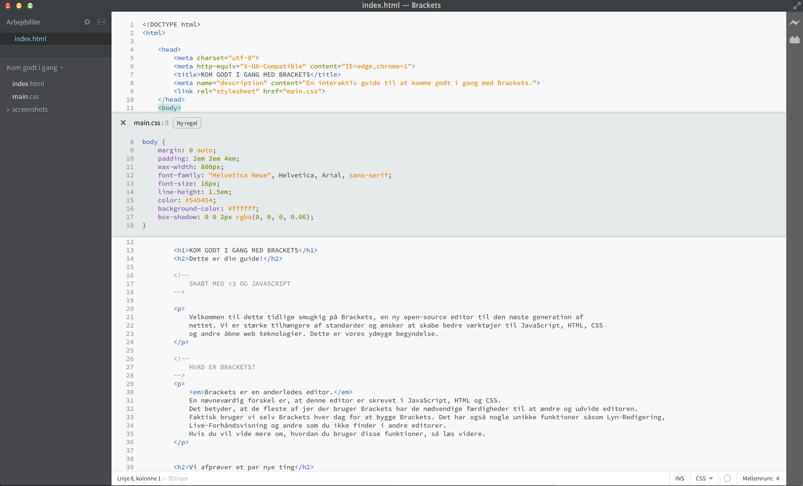

Velkommen til dette tidlige smugkig på Brackets, en ny open-source editor til den næste generation af nettet. Vi er stærke tilhængere af standarder og ønsker at skabe bedre værktøjer til JavaScript, HTML, CSS og andre åbne web teknologier. Dette er vores ydmyge begyndelse.
Brackets er en anderledes editor. En nævneværdig forskel er, at denne editor er skrevet i JavaScript, HTML og CSS. Det betyder, at de fleste af jer der bruger Brackets har de nødvendige færdigheder til at ændre og udvide editoren. Faktisk bruger vi selv Brackets hver dag for at bygge Brackets. Det har også nogle unikke funktioner såsom Lyn-Redigering, Live-Forhåndsvisning og andre som du ikke finder i andre editorer. Hvis du vil vide mere om, hvordan du bruger disse funktioner, så læs videre.
Slut med at skifte mellem dokumenter og miste fokuset. Når du redigerer HTML, kan du trykke Cmd/Ctrl + E for at åbne en indlejret editor som viser alt det relevante CSS. Tilpas dit CSS, tryk ESC og du ryger tilbage til dit HTML-dokument, eller du kan efterlade CSS-reglerne åbne så de bliver en del af din HTML-editor. Hvis du trykker ESC udenfor en Lyn-Redigerings-editor, bliver de alle klappet sammen.
Vil du se hvordan det virker? Placér markøren på tagget ovenfor og tryk Cmd/Ctrl + E. Du burde se Lyn-Redigering dukke frem, som viser den CSS-regel som anvendes på den. Lyn-Redigering virker også med klasse- og id-attributter. Du kan oprette nye regler på samme måde. Klik i en af tagsne ovenover og tryk Cmd/Ctrl + E. Der er ingen regler til den lige nu, men du kan klikke på "Ny Regel" for at oprette en ny regel til . Du kan også bruge den samme genvej til at redigere andre ting--såsom funktioner i JavaScript, farver, og timing-funktioner til animationer--og vi føjer mere til hele tiden. Indtil videre kan editorerne ikke indlejres i hinanden, så du kan kun bruge Lyn-Redigering så længe markøren er i det primære redigerings-felt.
Kender du den "gem/genindlæs"-finte vi har lavet i årevis? Den hvor du laver ændringer i din editor, gemmer, skifter over til browseren og så genindlæser for endeligt at se resultatet? Med Brackets kan du lægge den finte på hylden.
Brackets åbner en direkte forbindelse til din lokale browser og sender HTML og CSS opdateringer imens du skriver! Måske gør du allerede noget lignende i dag med browser-baserede værktøjer, men med Brackets behøver du ikke kopiere den endelige kode tilbage i editoren. Din kode kører i din browser, men bor i din editor!
Brackets gør det nemt at se dine ændringer i HTML og CSS vil påvirke siden. Når markøren er på en CSS-regel, vil Brackets fremhæve alle påvirkede elementer i browseren. Ligeledes, når en HTML-fil redigeres, vil Brackets fremhæve de tilsvarende HTML-elementer i browseren.
Hvis du har Google Chrome installeret, kan du prøve det af selv. Klik på lyn-ikonet i øverste højre hjørne af Brackets vinduet eller tryk Cmd/Ctrl + Alt + P. Når Live-Forhåndsvisning slåes til på et HTML-dokument, kan alle tilknyttede CSS-dokumenter redigeres i realtid. Ikonet skifter fra grå til guld når Brackets har etableret en forbindelse til browseren. Placér nu markøren på tagget ovenover. Bemærk den blå fremhævning der dukker op rundt om billedet i Chrome. Tryk derefter på Cmd/Ctrl + E for at åbne de definerede CSS-regler. Prøv at ændre tykkelsen på kanten fra 10px til 20px eller ændre baggrundsfarven fra "transparent" til "hotpink". Hvis du har Brackets og browseren til at køre side om side, kan du med det samme se dine ændringer blive vist i browseren. Er det ikke sejt?I dag understøtter Brackets kun Live-Forhåndsvisning for HTML og CSS. Ændringer til JavaScript-filer bliver dog genindlæst automatisk når du gemmer. Vi arbejder i øjeblikket på at Live-Forhåndsvisning også understøtter JavaScript. Live-Forhåndsvisning er også kun muligt med Google Chrome, men vi håber på at bringe denne funktionalitet ud til alle gængse browsere i fremtiden.
For dem af os, som endnu ikke kan alle farvers HEX- eller RGB-kode udenad, gør Brackets det hurtigt og nemt at se nøjagtig hvilken farve der er brugt. I enten CSS eller HTML, peger du ganske enkelt på en farve-værdi eller gradient og Brackets vil vise et eksempel af den farve/gradient automatisk. Det samme gælder for billeder: du peger ganske enkelt på billede-adressen i editoren og der vises en miniature-udgave af det billede.
Du kan afprøve Lyn-Visning ved at placére markøren på tagget øverst i dette dokument og trykke Cmd/Ctrl + E for at åbne CSS-Lyn-Redigering. Her kan du pege på enhver farve-værdi i CSS'en og se farven. Du kan også set det i aktion i gradienter ved at åbne Lyn-Redigering på tagget og pege på en af værdierne for baggrundsbilledet. For at se et smugkig af billeder, peg på adressen til skærmbilledet, som er indsat tidligere i dette dokument.Som tilføjelse til alle de gode sager der er indbygget i Brackets, har vores store og voksende samfund af udviklere skabt over hundrede udvidelser, som tilføjer nyttig funktionalitet. Hvis der er noget du har brug for, som Brackets ikke tilbyder, er det ret sandsynligt at nogen har lavet en udvidelse til det. For at gennemse eller søge i listen af tilgængelige udvidelser, vælg Filer > Udvidelses-håndtering og klik på fanen "Udvalg". Når du har fundet en udvidelse du kunne tænke dig, klikker du blot på knappen "Installér" ud for den.
Brackets er et open-source projekt. Web-udviklere fra hele verden bidrager til at bygge en bedre kode-editor. Endnu flere bygger udvidelser der udvider funktionaliteten af Brackets. Fortæl os hvad du synes, del dine idéer eller bidrag direkte til projektet.